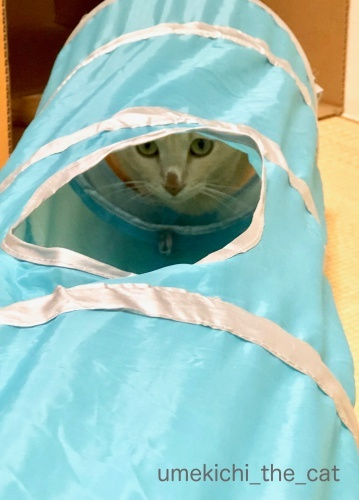
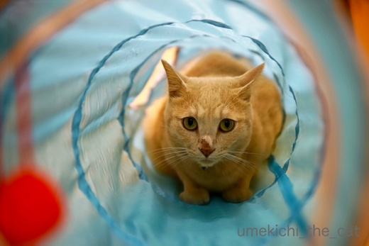
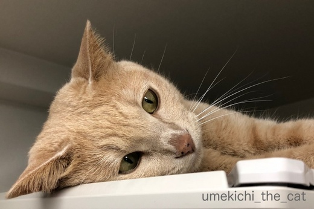
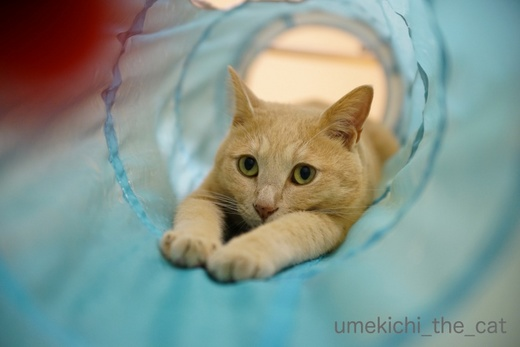
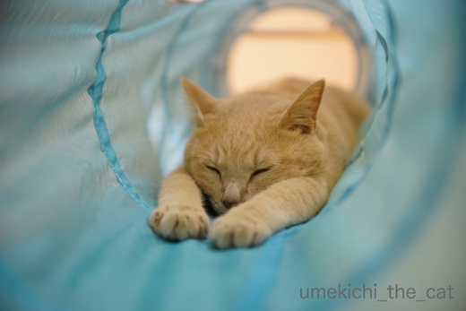
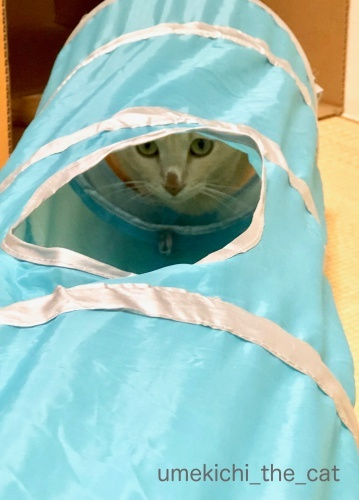
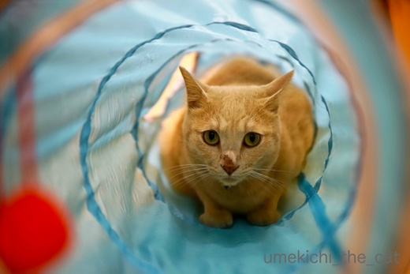
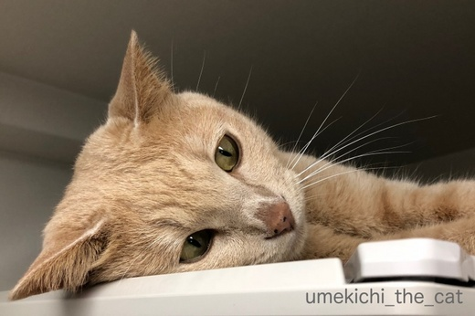
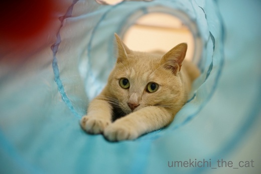
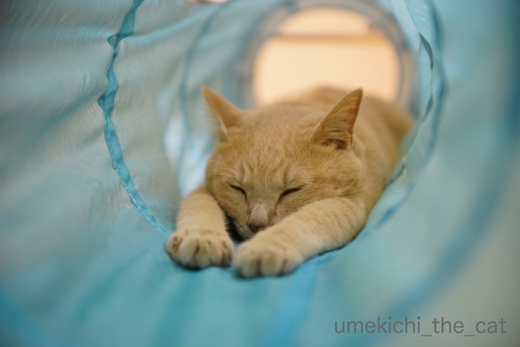

続くトンネルブームとお鼻にじにじ [梅吉]
梅吉さんのトンネルブームは続行中です。

横穴からのぞいて見る。
ん？お顔になにか違和感が・・・・・

お鼻の上の方が濡れています。お鼻にじにじ！！
最近、気温＆湿度が上昇して不快指数の高い日にこうなっちゃうんですよねー。
寝ている時以外で鼻が乾いているのは不調の証拠ですが
濡れすぎているのも問題が？と調べて見ると猫風邪の可能性もあるので注意、と。
でもいつも通り食欲もあるし元気いっぱい遊びます。体調不良ではない。
なにより猫風邪は鼻水だけど、梅吉のこれは鼻水ではない感じ。
午前中雨が降ってお鼻がにじにじに（にじんでも）なっても午後晴れて湿度が下がると治っています。
飼い主の結論としては「梅吉は鼻にも汗をかく」です。
歴代飼っていたにゃんこのお鼻の周りの被毛の色は白と濃いグレー（黒に近い）。
汗がにじんでも目立たない色だったかな。
第一飼っていたのは梅雨なんてない札幌で、にじむこと自体がなかったと思われますw
白・黒はにじんでも目立たなさそうですが
梅吉と同じような被毛の色、茶トラ系のにゃんこを飼われている方（もちろんそれ以外でも）
不快指数の高い日はお鼻の上がにじんでいませんか？
にゃんこにも体質があるので同じようになるわけではないと思いますけれど。

![[猫]](https://blog.ss-blog.jp/_images_e/101.gif) なんや かっこわるいわぁ・・・
なんや かっこわるいわぁ・・・
コアラのお鼻みたいでかわいいですよ（*>艸<)
で数時間後にはいつものお鼻でトンネルにイン！

どったんばったんしていたのに急に静かになった。のぞくとお得意のポーズでまったり。

わしここ むっちゃすっきやー

おちつくんやで・・・・・
 ↑ガブッと一押し↑
↑ガブッと一押し↑
おはなの にじにじ なおしてくれるほん あるやろか？
湿度が下がれば治りますよ＾＾
おかーさんも探していいかな？
梅吉さんが朝の四時からおかーさんを起こさないように説得してくれる本あるかしら？？

横穴からのぞいて見る。
ん？お顔になにか違和感が・・・・・

お鼻の上の方が濡れています。お鼻にじにじ！！
最近、気温＆湿度が上昇して不快指数の高い日にこうなっちゃうんですよねー。
寝ている時以外で鼻が乾いているのは不調の証拠ですが
濡れすぎているのも問題が？と調べて見ると猫風邪の可能性もあるので注意、と。
でもいつも通り食欲もあるし元気いっぱい遊びます。体調不良ではない。
なにより猫風邪は鼻水だけど、梅吉のこれは鼻水ではない感じ。
午前中雨が降ってお鼻がにじにじに（にじんでも）なっても午後晴れて湿度が下がると治っています。
飼い主の結論としては「梅吉は鼻にも汗をかく」です。
歴代飼っていたにゃんこのお鼻の周りの被毛の色は白と濃いグレー（黒に近い）。
汗がにじんでも目立たない色だったかな。
第一飼っていたのは梅雨なんてない札幌で、にじむこと自体がなかったと思われますw
白・黒はにじんでも目立たなさそうですが
梅吉と同じような被毛の色、茶トラ系のにゃんこを飼われている方（もちろんそれ以外でも）
不快指数の高い日はお鼻の上がにじんでいませんか？
にゃんこにも体質があるので同じようになるわけではないと思いますけれど。

コアラのお鼻みたいでかわいいですよ（*>艸<)
で数時間後にはいつものお鼻でトンネルにイン！

どったんばったんしていたのに急に静かになった。のぞくとお得意のポーズでまったり。


湿度が下がれば治りますよ＾＾
おかーさんも探していいかな？
梅吉さんが朝の四時からおかーさんを起こさないように説得してくれる本あるかしら？？
2018-06-14 08:08
nice!(64)
コメント(34)

カフェオレ色の梅吉

梅吉 2023年8月10日 永眠


梅吉と出会った譲渡会

犬猫の理由なき殺処分ゼロ
妄想広告
UMEKICHI 光

爆発的に早い！
時々攻撃的！
Thanks to Mr.Boss365
爆発的に早い！
時々攻撃的！
Thanks to Mr.Boss365

最後に、水の中にバシャーンと飛び込んでる御写真があったなら、
梅吉様がウォータースライダーを愉しまれてる御写真かと(^_^;)
by middrinn (2018-06-14 08:25)
ん？
雨が降ってにじにじになっても？
にじにじって分からへんです。
じめじめという感じ？(^_^;)
by よーちゃん (2018-06-14 09:25)
あおは興奮するとハナがこんなふうになるよー(笑)
甘えモードのときももちろんなる！ｗｗ
あー、たしかに「にじにじ」って表現いいね^^
たまに、あおのにじにじ、チューって吸っちゃいます（こら）
あるかしら書展、図書館で30人待ちだって^^;
気長に待つーーー
by リュカ (2018-06-14 10:01)
へー鼻がにじにじになっちゃうんだ。うちもなってるのかな？気付いてないだけ？今度よく観察してみます(*^_^*)
by palpal (2018-06-14 11:34)
こんにちは。
梅吉君！！サーフィンからウォータースライダーになりましたね！！
海パンが似合いそうです！！（⌒ー⌒）
お鼻が多少変わった色合いになってますね！！不思議な現象！！
元気そうなので・・・大丈夫かにゃ！？by すもも(=^･ｪ･^=)
本ありましたら小生も購入します。ご連絡を！？
by Boss365 (2018-06-14 12:06)
にじにじだったのですね。
擦れ擦れかと思ってビックリしました。
良かった〜
確かにコアラにみたいでかわいいですね。
お得意ポーズでネンネ体制、身体中から幸せが溢れてます。
by kiki (2018-06-14 15:03)
梅祥さんのスライディングポーズ好きです。あんよが可愛い。
私は今までにお鼻にじにじの猫を見たことはありません。鼻がよく濡れる体質なのでしょうね。猫風邪の保菌者でなければ心配ないのでは?
by zombiekong (2018-06-14 15:37)
お鼻がにじにじになっちゃうのですね！
湿度が多いとしめっちゃうのですね(^^)
トンネル大好きみたいですね。
by ma2ma2 (2018-06-14 15:47)
本当にお気に入りのトンネルなんですね(^^)
遊びすぎて壊れないことを祈ってます!
by kou (2018-06-14 16:25)
梅吉くん、にじにじしてるね。
家の子たち、お鼻の上がにじにじする子はいるかな？
ただお鼻でつんつんされたときにかなりしっとりしているときはあるよ(≧▽≦)
タラはにじにじしないけど泣き虫涙くんです。
病院で相談したら子猫の時の猫風邪かなにかで、涙腺から鼻に抜ける途中がふさがれちゃったのだろうと。
しょっちゅう拭いています(*^-^*)
トンネルの中のまったりポーズ。これも可愛いな～♪
むっちゃすき～を買ってもらえてよかったね(≧▽≦)
by emi (2018-06-14 19:28)
middrinnさん＞
梅吉そういうのすごく喜びそう！！
「もう止めたら？」って見ている側がうんざりするくら
何度もなんども繰り返し滑ったりしてw
実は梅吉マイプールを持っているのでーす。
組み合わせてみようかしら ( ´艸｀)
http://umekichi-the-cat.blog.so-net.ne.jp/2017-07-31
よーちゃん＞
はーい！
分かり難かったですよね。
お鼻がにじにじに（にじんでも）と加筆しました(｀_´)ゞ
ご指摘ありがとうございますm(_ _)m
で、すごい鼻でしょー( ´艸｀)
リュカさん＞
あおくんのふみふみちゅぱちゅぱのお鼻は
こんな風になっているのね＾＾にじにじ♡
もちろん私も吸っちゃってます！ついでに甘噛みもね ( ´艸｀)
この辺はシコシコって独特の歯触りでたまらんですw
お、30人待ち2ヶ月後くらいかなぁ。
私は去年の９月に予約した「騎士団長殺し」が270人待ちです (-_-メ)
ハルキストじゃないからいいんだけどさwww
palpalさん＞
そうなの！！palpalさんちならうちと気象条件が似てるだろうから
比較対象になりそう＾＾
２にゃんさんのお鼻見てみてー！！
色でわかりにくかったら触るとひんやりしてますよー。
Boss365さん＞
梅吉自前の白いパンツを履いております！！ビキニタイプだよー(*>艸<)
とっても元気なのでご心配いただくには全く当たりません＾＾
ありがとうございますm(_ _)m
来月は持病の定期検診なのでその時獣医さんには一応聞いてみるつもりです。
「汗やな。」で終わると思います ( ´艸｀)
あの本、必要ですね！！すももさんったらwww
了解しました。あったらご連絡します(｀_´)ゞ
わー！！！ごめんなさいー。
最初に投稿したコメントで呼び捨てにしていましたー =͟͟͞͞ ( ꒪౪꒪）
訂正をしました。
大変失礼致しましたm(_ _)m
by ちぃ (2018-06-14 20:35)
梅吉ブルーと名付けましょう♪
本当にトンネルの水色がよ～く似合いますね(*^▽^*)
こてつの鼻を観察していますが、もともと黒っぽいのでよくわからず・・顔を近づけるとものすごく嫌そうにのけ反るのが悲しい(-_-メ)
高温多湿の梅雨、梅吉さんはお鼻から湿気を放出して乗り切るのですね^^
by ゆきち (2018-06-14 21:34)
お鼻にじにじだったのですね。
私はてっきりお怪我をされたのかと思いました。^_^;
ウチの猫もにじにじするのか確かめて、、、
う・・・分かりませんでした。←黒猫
お手手を伸ばして寛ぐポーズ、可愛いですね！
トンネルがお気に入りなんですね。^^)
by yes_hama (2018-06-14 22:07)
うちのモモはもう何ヶ月も鼻の先が黒いです。
モモの場合は老猫だからかなと思っています。
梅吉さんは若いので、モモとは違う症状だと思います。
丈夫なトンネルなんですね(^^)
そういう所が気になります(^^;
by riverwalk (2018-06-14 23:05)
にじにじしてもやはりかわいい梅吉さん^^
by ryang (2018-06-14 23:07)
梅吉さん、トンネルお気に入りなのですね～＾＾
おてて伸ばしきって可愛い～そのまま寝ちゃうの♪
湿度が高いとお鼻がにじにじ！？
そんなことがあるなんて‥
でも‥うちもたま～にお鼻がこうなってることあった気がする‥法則性がそんなになかった気がするけど‥なんだったんだろー？
by sana (2018-06-14 23:54)
なんとなく水っぱなの雰囲気が＾＾；
猫風邪の鼻水は粘度があってちょっと濁りますし
くしゃみして飛ばします（爆）
by ぽちの輔 (2018-06-15 07:28)
湿度が高いと梅吉さんは鼻がにじにじになっちゃうんですねぇ(⌒-⌒; )
うちはニケが皮膚がカイカイになってハゲてきます(°_°)
そして大御所はアレルギーのせいで目やにと耳の汚れが(*_*)
なので、ちょっと気温が高めの梅雨時期は速攻エアコン生活開始です=(^.^)=
梅吉さん、トンネルで遊べるし、気持ち良く眠れるって良いなぁ( ^ω^ )
うちはトンネルで遊べるのはノエルくらいです(⌒-⌒; )
他の３ニャンはトンネルに遊ばれてますw→デカイから顔出し穴に体が挟まるw
by ニッキー (2018-06-15 08:05)
こんばんは。
今日も梅吉君！！トンネルでスライディングしてますね！！癒されるぞー！！
すもものゴールポストを死守画像追加しました！！こんな感じですか？
暇がありましたらお立ち寄り下さい！？(=^･ｪ･^=)
by Boss365 (2018-06-15 17:47)
kikiさん＞
びっくりさせちゃいましたか？
やんちゃな梅吉なのでどこかで擦りむいてくることは
ありそうな話ですよね(^▽^;)
って私は子供の頃に公園のトンネル遊びの最中に
転んで鼻全体を擦りむいたことがありますよーwww
トンネルはホント好きすぎて( ´艸｀)
今後貯まったポイントはへたったトンネルを買い換えることに
当てられそうです＾＾
zombiekongさん＞
お鼻にじにじになる猫はあまりいないのかな(・o・)
ブログの説明文を
「なにわの梅吉 白目がちでお鼻にじにじの日々」
にしようかしら・・・(*>艸<)
ma2ma2さん＞
トンネルは本当にお気に入りですよー＾＾
これからしばらくはお鼻にじにじ生活が続きそうです！
kouさん＞
トンネル、すでに穴がたっくさん空いて
見通しの良い箇所が出てきましたよ (^▽^;)
それはそれで面白いかもねwなんて思ってマスwww
emiさん＞
タラくん、お顔いつもキレイだから全然気づかなかった！
泣き虫涙くんがちだと目の周りが赤っぽかったりするかな？
と思うんだけど。
ちゃんとお手入れしていると大丈夫なんだね＾＾
ちゃんと拭かせてくれるタラくんもえらいぞー(๑˃̵ᴗ˂̵)و
梅吉のスライディングポーズ可愛いでしょ(≧▽≦)
むっちゃ好きトンネルがあるからいいでしょ、と
今朝ずーっと起きっぱなしだった大きなダンボールを捨てました。
抗議されましたけどきっぱり捨てましたよー！
家の中ちょっとスッキリしましたw
ゆきちさん＞
わ〜い♡すてきなお名前付けていただきました！
爪穴のたっくさんあいたトンネルが
部屋のおしゃれインテリアとして生まれ変わったような＾＾
こてつくんのお鼻観察ありがとうございますm(_ _)m
すごく嫌そうにのけ反る、ものすごく想像できます(*>艸<)
で、猫変態の私はその嫌そうな顔が好きだったりしますwww
梅雨時期の梅吉は肉球じっとり、お鼻はにじにじでーす。
yes_hamaさん＞
アズ氏は！
にじにじがわからないにゃんこナンバーワンですね ( ´艸｀)
でも確かめてくださってありがとうございます＾＾
お鼻に怪我は梅吉ならいかにもありそうですよね。
昔ほど無茶をしなくはなりましたが
怪我には本当気を付けなきゃ、ですw
トンネルは毎日入り浸ってますwww
riverwalkさん＞
そうそう、モモちゃんのお鼻の先の黒い写真憶えています。
梅吉はお鼻自体は変わった様子はないので
やっぱり汗かなと思っていますよー。
トンネルは爪穴がたっくさん空いているのですが
壊れそうで壊れない！
脆そうなんですけど意外と壊れないように出来ているみたいです＾＾
ryangさん＞
水も滴る良い漢！なんてー( ´艸｀)
コアラみたいで見てて楽しいです！
sanaさん＞
お鼻にじにじの法則性、
私も今シーズン「あれ？」と思ったばかりなので
にじにじになる条件はいろいろあるのかもしれません。
これからの梅雨本番じっくり観察しますね＾＾
猫雑誌にレポートが書けるかな(*>艸<)
お手手伸ばしポーズはリラックスしている証拠なので
トンネルは本当に居心地が良いみたいです＾＾
ぽちの輔さん＞
猫風邪の鼻水、先代猫にかけられたことありますwww
ちょっと生臭かったようなwwwww
ニッキーさん＞
ニッキーさんのお家では湿気でにじにじー！なんて
喜んでいる場合ではないのですね・・・
みにゃさまに元気に過ごしていただくにはエコアン必須ですね＾＾
この梅雨もみにゃさま無事に過ごされますようにm(_ _)m
トンネルに遊ばれるってwwwww
キャットタワーの穴にも遊ばれていたような( ´艸｀)
Boss365さん＞
リクエストしちゃったみたいですねー(≧▽≦)
早速の画像追加ありがとうございます！！
by ちぃ (2018-06-15 18:26)
トンネル楽しそうだニャ。
トンネル(トン寝る)だから眠くなるのかな？（ﾟ□ﾟ）
by えーちゃん (2018-06-16 10:36)
お鼻にじにじ?! へぇ〜、汗なんですね?!
ま、にじにじも可愛いよ。たしかにコアラの鼻っぽい(^_^;
それにしても、トンネル寝が気持ちよさそう〜♡
by のらん (2018-06-16 11:44)
えーちゃんさん＞
うまい！！Ｏ(≧▽≦)Ｏワタクシから座布団を10枚です＾＾
ということは梅吉もトンネル、寝るを理解している！？
梅吉にも10枚！！！( ´艸｀)
のらんさん＞
期間限定コアラ猫なんてーＯ(≧▽≦)Ｏ
まぁ、体調不良ではないので汗かな・・・と
来月の定期診察時に獣医さんに確認してみる予定です＾＾
トンネル、おっとが顔を入れてました。
快適なんですってーwwwww
by ちぃ (2018-06-16 15:24)
「トンネル サイコー！」とあかりも言っています( ´艸｀)
梅吉さん、お鼻にじにじ…だったんですね。
何かがくっついてるのかと思っちゃいました＾＾；
カフェオレ色は、濡れちゃうと濃くなるんだ…って
素朴に感心したりして＾＾
でも、風邪とかじゃなくて、本当に良かったです♪♡＾＾
by マーヤ (2018-06-17 00:31)
何回も梅吉ちゃんのお鼻を見てしまいました。
ほんとだ！！！にじにじしてますね。
病気とかじゃないと思いますが、
梅吉ちゃんのこの写真を見ていて思ったことは、(そばいないのであくまでも想像です)
最初の二枚のトンネル写真はどうやら人間でいうところの絶叫しながら遊んでる感じ。いやそこまで吠えてるようには見えませんが・・・
で三枚目はその直後、クールダウンに入る前でまだお鼻はにじにじ？
そのあとのトンネル中の様子はだいぶリラックスしてる感じがします。
興奮すると鼻から汗＾＾；
って感じなのかしらね？？？
目から涙、(悲しくないのに)出てばっかりいる子がいますが(パヴェル)、うちは鼻から汗は絶好調の興奮状態のときにビジーが出ます。でも鼻の穴から汗だから単に鼻水か。(>^。。^<)
それにしても、トンネル楽しそうです。きゃ～って絶叫しちゃいそ、(私)
by ake_i (2018-06-17 17:24)
朝の4時は、早いですね。
by ニコニコファイト (2018-06-18 07:17)
地震速報が入りましたが、大丈夫ですか(*_*)
by ニッキー (2018-06-18 08:14)
地震、こちらは全く揺れなかったのであの速報、びっくりしました。
ちぃさんのところはご無事で何よりですが、被害が広がらないことを
祈るばかりです。。
とりいそぎ。
梅吉くんかわいい！( ´∀｀ )
ねこは肉球以外汗かかないと思っていました^^;
by Ja-Kou66 (2018-06-18 11:46)
地震のこと全然知らなくてさっき聞いて驚きました。ちぃさんのお家被害なしはとりあえず良かった。梅吉さんのお写真を見てちょっとホッとしました。
by zombiekong (2018-06-18 12:17)
マーヤさん＞
そうそう！
濡れるとカフェオレからコーヒーに変身よ(^_－)☆
トンネルってどうしてあんなに
ニャンコ心を捉えるのでしょうねー。
作った人、エライ！！
ake_iさん＞
そうなんです！
お鼻にじにじ、湿度だけではなく興奮度も関係しているようで・・・
私もまだ正確にはつかみきれない法則性があるようですw
ライフワークとしていこうかしらー ( ´艸｀)
優雅でお美しいビジー さんが鼻水垂らしながら興奮！？
高貴なだけじゃなく親しみやすい面をお持ちのビジー さんの
ファンになっちゃいますよーＯ(≧▽≦)Ｏ
ニコニコファイトさん＞
せめて５時にして欲しいところなんです(-_-メ)
ニッキーさん＞
気にかけていただいてありがとうございますm(_ _)m
我が家は何の被害もなく無事です。
梅吉もようやく落ち着いて寝ています＾＾
Ja-Kou66さん＞
ご心配いただいてありがとうございますm(_ _)m
ありがたいことに我が家、我が家付近
全く問題なくいつも通り過ごせています。
外に出たら学校が休みになって帰ってきた学生
帰宅難民？会社に向かっている？？勤め人の方達が
たくさん歩いていてびっくりしました。
幹線道路も渋滞しています。
府内北・京都南部の被害が心配です。
肉球もじっとり汗をかく梅吉ですが
お鼻もにじにじw
コアラっぽくて笑っちゃいます。
現れるたび形もビミョーに違うので
「梅吉、鼻占い」が出来そうですwww
zombiekongさん＞
我が家は無事です！お気遣いありがとうございましたm(_ _)m
私もテレビで知る範囲なのですが大阪北部・京都南部の被害が
大きいようです。
断水・停電も起きていて。
夕方には被害の全容がわかるでしょうか。
これ以上痛ましいニューズが入ってこないよう祈るばかりです。
梅吉はようやく落ち着いて寝ていますよ＾＾
by ちぃ (2018-06-18 14:27)
なんと！お鼻にじにじ、知らなかったーーー！！
おっしゃる通り、クロ猫は、濡れ状況がわかりにくい毛色。
代わりに？、ハゲは一発でわかるんですけどね(^▽^;)
大丈夫よ、梅吉さん。
オバちゃんも夜になると、アイシャドウやアイラインがにじにじして、
パンダみたいな顔になってるから（違うか。。。^_^;）
話題の「あるかしら書店」。まだ読んだことがないんです。
読まねばっ！！
地震、何事もなくて良かったです。
関東地方も多く、心が休まりません。
by morichan (2018-06-18 15:16)
morichanさん＞
あああ、ハゲは一発でわかっちゃいますねーw
早期発見に協力！クロ猫さんは良い子じゃ〜＾＾
お化粧のにじにじ、
若い子の顔見たら夜もにじんでないのはなぜかしらー。
おばちゃんの顔からは夜に向かって何か滲み出てくるのかしら？
お化粧落とす手間が楽になるように加齢と共に進化してるのかしら？？
「あるかしら書店」ならその辺の謎を書いた本があるかしら？
なんて本の宣伝みたいになっちゃいましたが ( ´艸｀)
ぷぷっと笑える楽しい本でしたよー。
大人だからこそ理解できる内容でしょうか。
最近関東も揺れていますよね。心配です。
何事もないのが一番ですが備えもしっかり、
心構えもバッチリ整えたいな、と思いました。
by ちぃ (2018-06-18 16:09)
こちらで、すみません。心配してました。ご無事で良かったです。
キャリーバックに入れることすら・・・ってわかりますよ。
私も東日本の時、そうでした。
関東にいる私も最近は頻繁に地震があってその震源地からやや遠いものの、今日の緊急地震速報は、こっちか？？ってビビりまくりました。
by ake_i (2018-06-19 00:19)
ake_iさん＞
コメントありがとう＆心配していただいてありがとうございます！！
嬉しいですー(꒦ິ⌑꒦ີ)(꒦ິ⌑꒦ີ)(꒦ິ⌑꒦ີ)
地震が起きた瞬間は「へ？揺れてる？？ウソでしょ・・・」と
身に降りかかろうとする災害を一瞬無視するかのような
脳の働きが・・・
災害時の行動は日頃から色々考え家族でも話し合っているのですが
いざとなるとダメなのもですね。
ま、これを教訓にと前向きですけれど＾＾
関東からも広範囲で地震のニュースが入ってきていますよね。
お互い色々と備えましょうねーーー！！！
by ちぃ (2018-06-19 07:42)